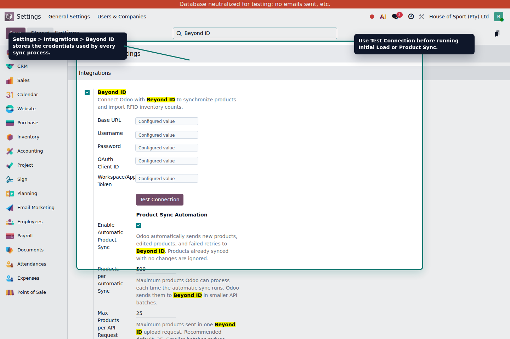
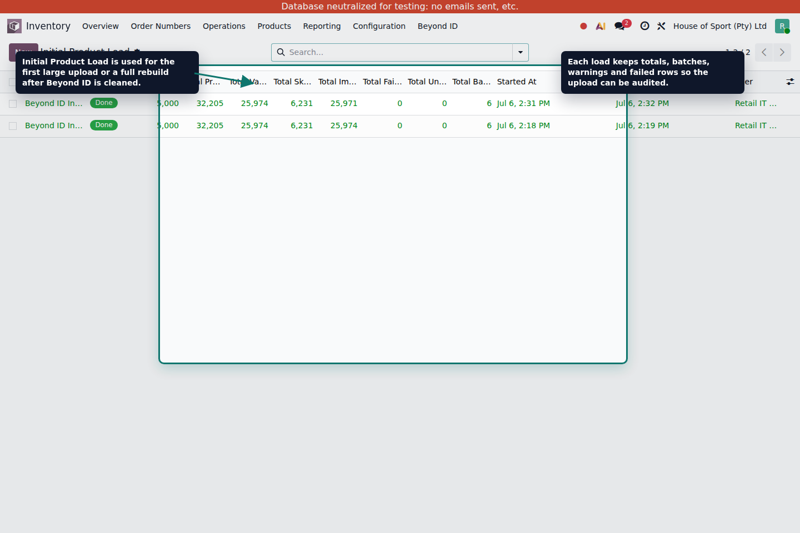
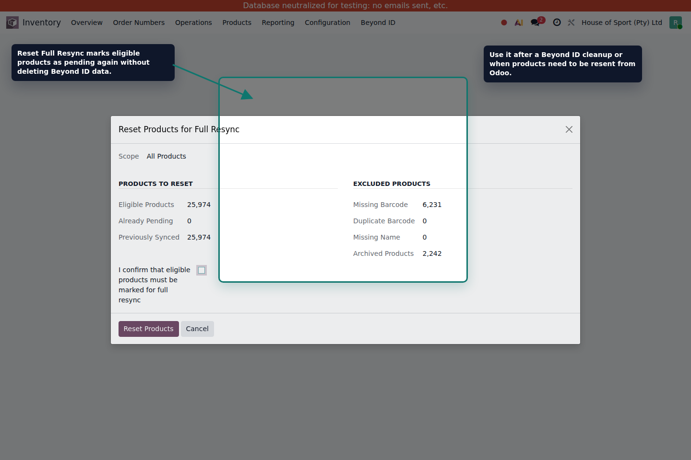
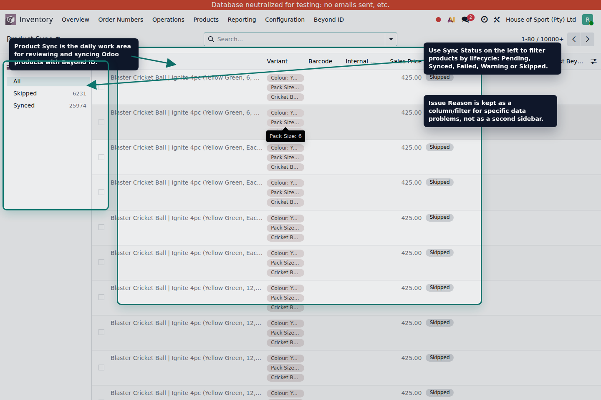
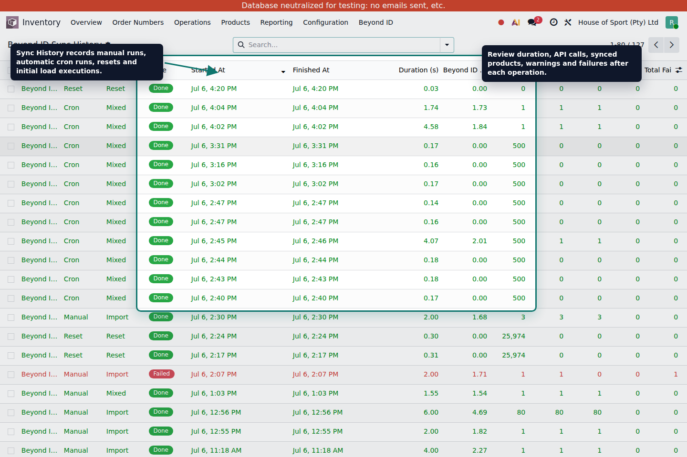

Beyond ID Product Sync User Manual
This guide explains the correct operational flow for sending products from Odoo to Beyond ID, reviewing synchronization status, running the initial load, and handling exceptions.
1. Introduction
Odoo is the main source of product information. Beyond ID receives product data from Odoo so RFID inventory and product-related processes can use the same product identifiers and barcodes.
Main purpose
Keep Beyond ID product data aligned with Odoo product variants using a controlled API process.
Operational flow
Configure the API, run the initial load, use reset only when needed, then rely on automatic or manual sync.
2. Configuration
Open Settings > Integrations > Beyond ID and configure the API credentials before using any sync process.

The Settings page stores the API credentials, workspace token and product sync automation options.
| Field | Purpose |
|---|---|
Enable Beyond ID Integration |
Activates the API integration. This must be enabled before using Test Connection, Initial Load or Product Sync. |
Base URL |
Beyond ID server URL. Default/example value: https://beyondid.keonn.com. |
Username and Password |
Credentials used to request the OAuth access token. |
OAuth Client ID |
OAuth client identifier. Default value: cloud. |
Workspace/App Token |
Identifies the Beyond ID workspace/app where products and inventory data are handled. |
Test Connection |
Validates credentials and workspace access before running product synchronization. |
Test Connection after changing credentials. A successful test confirms OAuth access and workspace token validation.
Example configuration
Enable the integration, keep Base URL as https://beyondid.keonn.com,
keep OAuth Client ID as cloud, enter the Beyond ID username/password,
and enter the Workspace/App Token provided by Beyond ID.
Base URL and OAuth Client ID.
The customer or Beyond ID administrator must provide the username, password and Workspace/App Token.
3. Product Data Sent to Beyond ID
The product sync sends a CSV file to the Beyond ID product import endpoint. The current implementation sends the minimum stable fields required for SKU-level product synchronization.
| Beyond ID field | Odoo source | Rule |
|---|---|---|
itemtype |
Fixed value | Always sent as sku. |
productid |
product.product.id |
Uses the Odoo product variant ID as the stable product identifier. |
skuid |
product.product.id |
Uses the Odoo product variant ID because Beyond ID operates at SKU level. |
code |
barcode |
Must contain the product barcode/EAN. It is not the Odoo internal reference. |
price |
lst_price |
Sends the Odoo sales price. |
name |
Product display name | Includes the variant display name when variants exist. |
default_code with barcode. Beyond ID field code must be the barcode/EAN.
The Beyond ID documentation also supports optional fields such as currency and image references
like images[0]. Those are not part of the current product sync scope unless explicitly enabled later.
| Optional field | Current decision |
|---|---|
currency |
Can be added later if Beyond ID needs the currency per product. Current sync sends only the price value. |
images[0] |
Can reference an image URL or image already available to Beyond ID. Binary image upload is not part of this product sync. |
Example row sent to Beyond ID
sku,12345,12345,6001234567890,49.99,Training Shirt / Size M
4. Initial Product Load
Use Inventory > Beyond ID > Initial Product Load for the first large upload or after Beyond ID product data
has been cleaned and needs to be rebuilt from Odoo.

Initial Product Load creates an auditable batch-based upload process.
- Create a new initial load record.
- Use the preparation step to classify valid and excluded products.
- Start the load and monitor progress by batch.
- Review imported, failed, unconfirmed and quota-related records.
- Retry only the products that still need action after correcting the issue.
Example use case
If Beyond ID starts empty, run Initial Product Load once. After that, normal product edits should use automatic sync.
5. Reset Full Resync
Use Reset Full Resync when valid products must be marked as pending again. This does not delete products in Beyond ID.
Why reset is needed
If Beyond ID removes or cleans all product data after some time, Odoo may still show products as already synced. Reset Full Resync clears that sync memory for eligible products and places them back in the queue so they can be sent again.

The reset wizard separates eligible products from excluded products before marking records pending.
| Area | Meaning |
|---|---|
| Eligible Products | Products that have required data and can be resent to Beyond ID. |
| Missing Barcode | Products excluded because barcode is empty. |
| Duplicate Barcode | Products excluded because another active product uses the same barcode. |
| Missing Name | Products excluded because the display name is missing. |
| Archived Products | Products excluded because archived products are intentionally ignored. |
6. Automatic Sync
Automatic sync is controlled by the Odoo scheduled action Beyond ID: Automatic Product Sync.
It processes products that need updates and are valid for sync.
| Setting | Meaning |
|---|---|
Enable Automatic Product Sync |
When enabled, Odoo automatically sends products that need updates. When disabled, products can still become Pending, but the cron will not send them. |
Products per Automatic Sync |
Maximum products Odoo can process in one cron execution. Example: if this is 500, one cron run processes up to 500 pending products. |
Max Products per API Request |
Maximum products sent in one Beyond ID upload request. Example: if this is 25, 500 products are sent as 20 API requests. |
| Scheduled action interval | Can be adjusted in Settings > Technical > Automation > Scheduled Actions. |
Example
A user changes a product price from 49.99 to 59.99. Odoo marks the product as Pending.
The next cron run sends it to Beyond ID and the product becomes Synced.
Automation example
Enable Automatic Product Sync is enabled, Products per Automatic Sync is 500,
and Max Products per API Request is 25. If 120 products are pending, Odoo processes all 120
in the next cron run and sends them to Beyond ID in 5 smaller API requests.
Pending.
They will wait there until automatic sync is enabled again or the user runs Sync Selected.
7. Manual Sync
Use manual sync from Inventory > Beyond ID > Product Sync when selected products need to be sent immediately.
- Open the Product Sync list.
- Select the products to synchronize.
- Click
Sync Selected. - Monitor the progress page until completion.
- Review Sync History if warnings or failures are reported.
8. Product Sync View
Product Sync is the main operational view for reviewing synchronization status and resolving product data issues.

The left panel uses Sync Status. Issue Reason remains available as a column and targeted filters.
| Column | Purpose |
|---|---|
| Product | Odoo product variant display name. |
| Barcode | Barcode/EAN sent as Beyond ID code. |
| Sales Price | Price sent to Beyond ID. |
| Sync Status | Current lifecycle status of the sync record. |
| Issue Reason | Specific reason when the product cannot be sent or failed. |
| Last Sync | Date/time of the last successful synchronization. |
| Last Error | Most recent error returned by Odoo or Beyond ID. |
How Odoo detects modified products
After a successful sync, Odoo stores a payload hash. When barcode, name, variant display data or sales price changes, Odoo recalculates the payload. If the payload changed, the product is placed back in the synchronization queue.
Hash example
Product A is sent with barcode 6001234567890, price 49.99 and name
Training Shirt / Size M. Odoo stores a hash for that exact data, for example
8f3a9c21. If the price changes to 59.99, Odoo calculates a different hash,
for example c41b77e2. Because the hash changed, Odoo marks the product as
Pending and sends it again. If nothing changes, the hash remains 8f3a9c21
and Odoo does not resend the product.
9. Sync History
Sync History stores each synchronization execution and provides an audit trail for manual sync, automatic sync, reset and initial load activity.

Use Sync History to review execution type, status, duration, API calls and issue counts.
10. States and Reasons
The state tells where the product is in the synchronization lifecycle. The reason explains why a product cannot be sent or why it failed.
Common examples
Product with a new price: Pending. Product without barcode: Skipped / Missing Barcode.
Product sent correctly: Synced.
| Reason | Meaning | Typical action |
|---|---|---|
Missing Barcode |
The product has no barcode and cannot be sent. | Add the barcode in Odoo. |
Duplicate Barcode |
Another active product uses the same barcode. | Correct the duplicate barcode before syncing. |
Missing Name |
The product name is missing. | Correct the product name. |
API Error |
Beyond ID rejected the request or did not respond correctly. | Check Sync History and retry after the issue is resolved. |
Validation Error |
The product failed a non-retryable validation rule. | Correct the data, then sync again. |
11. Archived Products
Archived Odoo products are intentionally ignored by the Beyond ID product sync process.
- Archived products do not appear in the Product Sync view.
- Archived products are not selected by the automatic cron.
- Archived products are not sent by manual sync.
- Archiving a product in Odoo does not delete it in Beyond ID.
12. Best Practices
- Keep product barcodes unique and complete before syncing.
- Use Initial Load for the first large upload or after cleaning Beyond ID data.
- Use Reset Full Resync only when products must be resent from Odoo.
- Use automatic sync for normal daily updates.
- Use manual sync only for selected product corrections or immediate validation.
- Review Sync History after failures, warnings or large runs.
- Do not use product archiving as a Beyond ID delete operation.